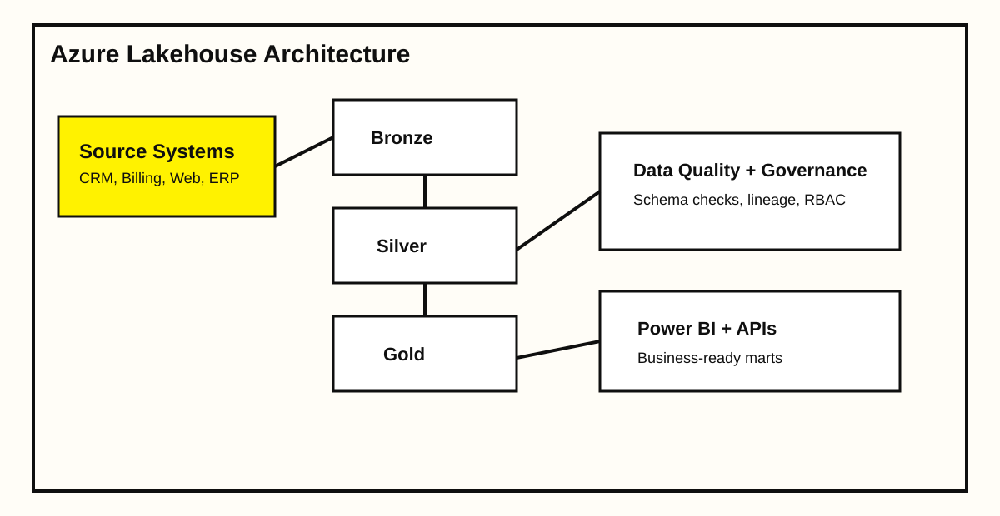

Rebuilt a fragmented reporting stack into a governed lakehouse with clear medallion layers. The goal was to reduce data incidents, improve dashboard freshness, and make onboarding of new data domains predictable.
Project scope
Integrated 9 source systems (CRM, ERP, billing, and web events) into ADLS through Azure Data Factory. Standardized 120+ raw tables into curated Silver models and 30 domain-focused Gold marts for BI consumption.
Architecture Snapshot

Impact Metrics
-42%
Pipeline Failures
-31%
Compute Cost
+2.4x
Data Onboarding Speed
Implementation details
Added schema drift detection, data contracts for critical entities, and row-level audit columns across all curated layers. Partitioning and compaction strategy in Databricks reduced scan volume while keeping SLA consistency for daily reporting.